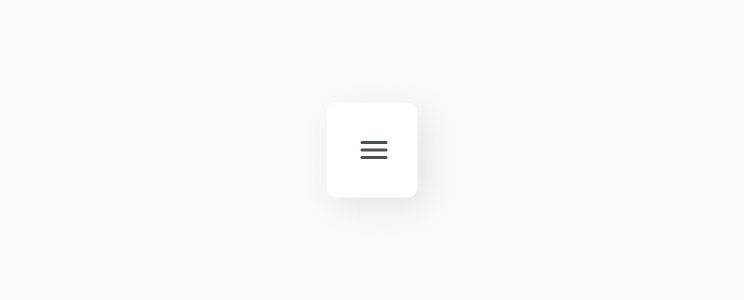
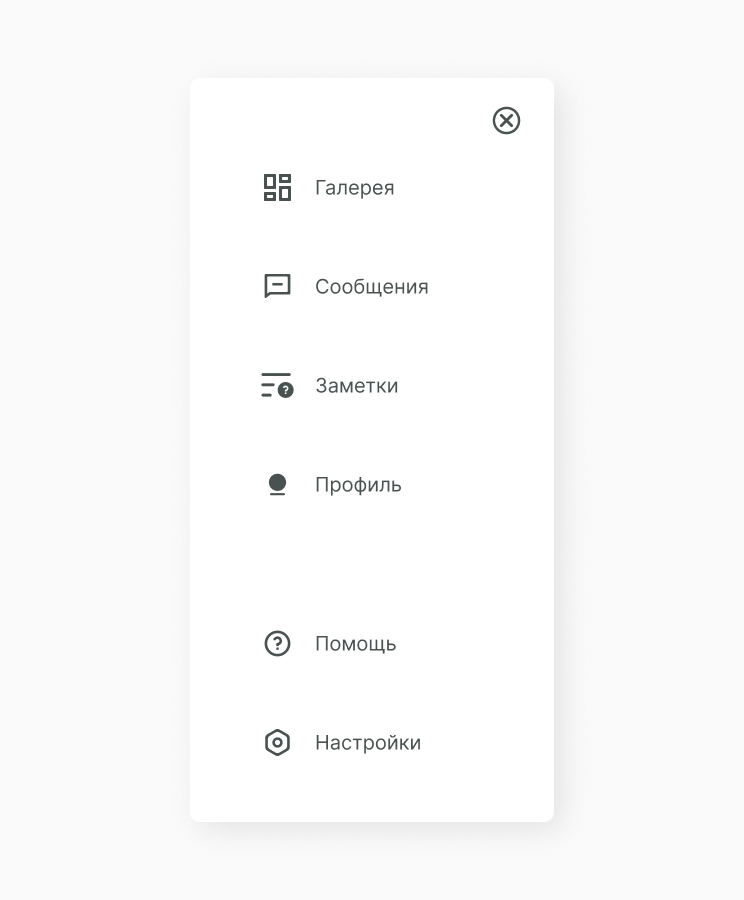

Burger Menu
Бургер меню один из самых популярных видов навигации. Мы уже рассказывали о sidebar menu и в целом основное отличие этих компонентов в анимации открытия и закрытия. Можешь подробнее прочитать про основные свойства этого компонента.
Структура компонента
Этот компонент помимо основной структуры с menu item содержит также функциональные иконки открытия и закрытия компонента. Вот как это выглядит.
После нажатия на бургер появляется всё меню, оно может полностью перекрывать экран или только его часть.
Состояние компонента
Исходя из структуры, мы можем выявить несколько состояний компонента при пользовательском действии.

Реализация
Для начала создаём S_BurgerMenu.jsx. Прописываем функционал, собираем menu item в коллекции а также прописываем функционал открытия и закрытия компонента.
import React, { PureComponent } from 'react'
import A_MenuItem from '../../atoms/A_MenuItem/A_MenuItem.jsx'
import './S_BurgerMenu.scss'
export default class S_BurgerMenu extends PureComponent {
constructor(props) {
super(props)
this.state = {
showMenu: false
}
this.openMenu = this.openMenu.bind(this)
this.closeMenu = this.closeMenu.bind(this)
}
openMenu() {
this.setState((prevState) => ({
...prevState,
showMenu: true
}))
}
closeMenu() {
this.setState((prevState) => ({
...prevState,
showMenu: false
}))
}
render() {
const { showMenu } = this.state
const { menu } = this.props
const { top, bottom } = menu
const topMenuElements = []
const bottomMenuElements = []
top.forEach((item, i) => {
topMenuElements.push(<A_MenuItem {...item} key={'top' + i} />)
})
bottom.forEach((item, i) => {
bottomMenuElements.push(<A_MenuItem {...item} key={'bottom' + i} />)
})
return (
<div className="S_BurgerMenu">
{!showMenu && (
<div className="Q_Icon burger" onClick={this.openMenu}></div>
)}
{showMenu && (
<div className="W_MenuContent">
<div className="Q_Icon close" onClick={this.closeMenu}></div>
<div className="C_MenuItems">{topMenuElements}</div>
<div className="C_MenuItems">{bottomMenuElements}</div>
</div>
)}
</div>
)
}
}По принципу изоляции прописываем стили.
.S_BurgerMenu {
width: 360px;
padding: 40px 28px;
box-shadow: 9px 9px 35px rgba(0, 0, 0, 0.09);
border-radius: 10px;
display: flex;
justify-content: center;
}
.S_BurgerMenu .W_MenuContent {
display: flex;
flex-direction: column;
align-items: flex-end;
}
.S_BurgerMenu .C_MenuItems {
display: flex;
flex-direction: column;
}
.S_BurgerMenu .C_MenuItems:last-child {
margin-top: 100px;
}
.S_BurgerMenu .Q_Icon.close {
width: 35px;
height: 35px;
cursor: pointer;
}
.S_BurgerMenu .Q_Icon.burger {
width: 35px;
height: 35px;
cursor: pointer;
}В файле сборщика заполняем массивы top и bottom и выводим компонент. Ты можешь посмотреть как мы это делаем в туториале про sidebar menu. А так выглядит рабочий компонент burger menu.
Составляющие
В этот компонент часто выводятся следующие компоненты.